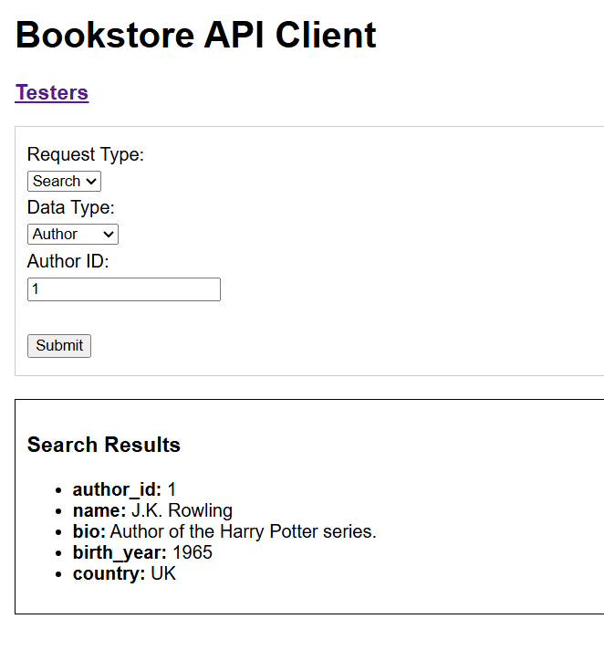
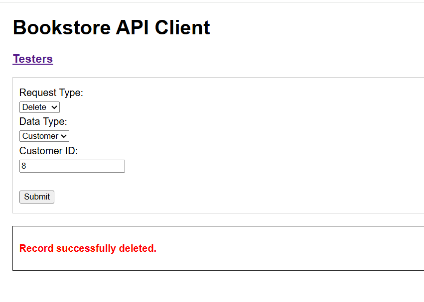
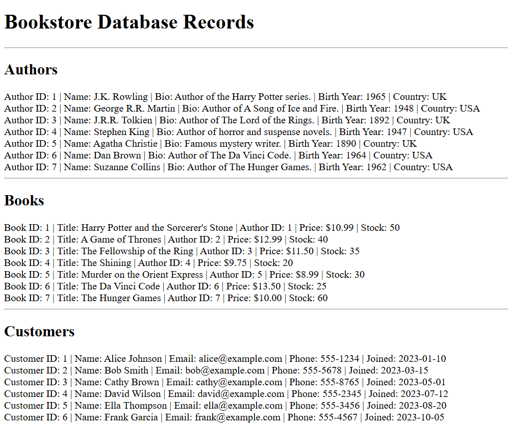

The following screenshots and sample code were from a project that had the purpose of creating a RESTful
Web Service with using JSON, PHP, and MySQL.
Sample Screenshots
After Successfully Searching Author Record

After Successfully Deleting Customer Record

DB Tester Page

Sample PHP API Code
public function OnLoad() {
if (isset($_POST['Request'])) {
$request = $_POST['Request'];
$type = $_POST['Type'];
switch ($request) {
case 'Search':
$this->SearchItem($type);
break;
case 'Insert':
$this->InsertItem($type);
break;
case 'Update':
$this->UpdateItem($type);
break;
case 'Delete':
$this->DeleteItem($type);
break;
}
}
}
Java ProductDB class SOAP Web Service with Unique Product
Sample Screenshots
Scrum 4 Team Project Videos and Slides
The attached slides and video are from a presentation related to a Scrum Project that had the purpose
of creating a Java based HTML-JSP-Java Web Application along with a XML-SOAP Web Service Provider with
a JSP test client.